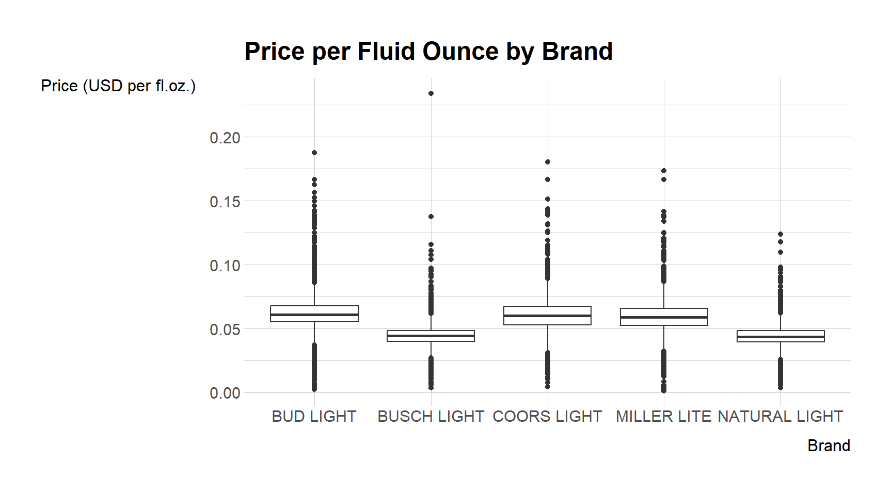
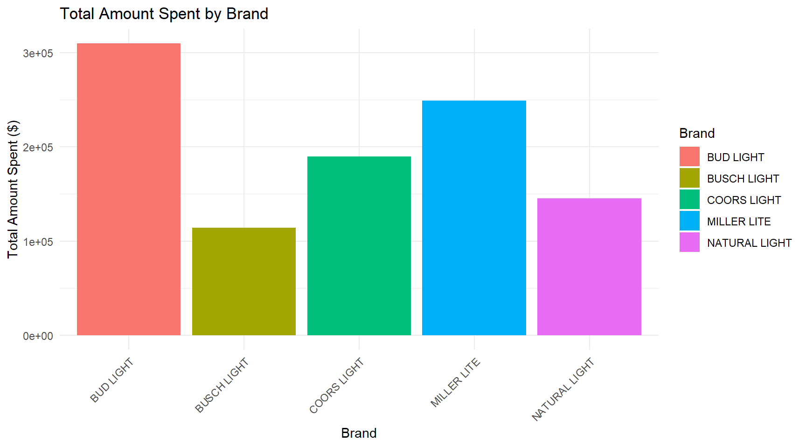
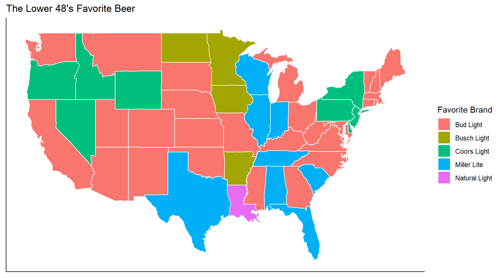
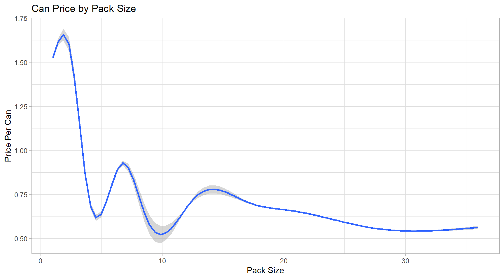

beer_data <- read_csv("https://bcdanl.github.io/data/beer_markets_all.csv")DANL 200-02: Beer Market Data Analysis
Final Project
How Do the Prices Per Fluid Ounce Vary from One Brand to Another? Analyzing price per fluid ounce across brands is crucial for both consumers and businesses within the beer industry. Customers are always looking to get the most out of their purchases, and comparing the cost per fluid ounce of various beer brands helps them identify which brands are the best deals on beer. This is crucial for consumers on a tight budget who might value quantity above brand awareness. Thus, they can make informed purchasing decisions using this information. Moreover, the analysis can also help with market segmentation. By understanding how price impacts various consumer groups, businesses can tailor marketing and promotions. For instance, to draw customers, a retailer may decide to price some goods cheaply or to give premium brands larger margins. If data indicates that a particular beer brand has a higher price point than rivals, a grocery store chain may choose to launch a promotion on it to draw in more consumers or boost sales volume. In public policy, regulatory authorities may also find this data useful to evaluate possible price gouging or to ensure fair competition.
Below, I use the R code to calculate the average price per fluid ounce for each brand of beer and standard deviation to see how much the price per fluid ounce varies within each brand. The R code to calculate these is as follows:
summary_by_brand <- beer_data %>%
group_by(brand) %>%
summarize(mean_price_floz = mean(price_per_floz),
sd_price_floz = sd(price_per_floz))The box plot shows the distribution of price per fluid ounce for each brand of beer. This allows us to see the median (middle value of a dataset), upper (75th percentile), lower quartiles (25th percentile), minimum and maximum, and outliers for each brand (data points that significantly differ from the rest of the data). In addition to this, this boxplot also helps us to see if there are any outliers (data points that significantly differ from the rest of the data). The R code to create the boxplot is as follows:
ggplot(beer_data, aes(x = brand, y = price_per_floz)) +
geom_boxplot() +
labs(title = "Price per Fluid Ounce by Brand", x = "Brand", y = "Price (USD per fl.oz.)")
For data transformation, the outliers can be removed from the dataset as extreme values can skew the results and impact measures like mean and standard deviation.
How does Total Sales vary across different brands? In this section, we will calculate the total amount spent on each brand and visualize the data using a bar plot. Additionally, we will provide summary statistics such as mean and standard deviation of the total amount spent per brand.
Calculate the total amount spent per brand:
summary_by_brand <- beer_data %>%
group_by(brand) %>%
summarize(total_spent = sum(dollar_spent, na.rm = TRUE),
mean_spent = mean(dollar_spent, na.rm = TRUE),
sd_spent = sd(dollar_spent, na.rm = TRUE))
print(summary_by_brand)# A tibble: 5 × 4
brand total_spent mean_spent sd_spent
<chr> <dbl> <dbl> <dbl>
1 BUD LIGHT 309653. 14.3 9.03
2 BUSCH LIGHT 113953. 13.1 8.13
3 COORS LIGHT 189541. 14.5 8.35
4 MILLER LITE 248963. 14.5 9.04
5 NATURAL LIGHT 145246. 11.5 8.10The bar plot will show the total amount spent on each brand.
total_spent_by_brand <- beer_data %>%
group_by(brand) %>%
summarize(total_spent = sum(dollar_spent, na.rm = TRUE))
ggplot(total_spent_by_brand, aes(x = brand, y = total_spent, fill =
brand)) +
geom_bar(stat = "identity") +
labs(title = "Total Amount Spent by Brand",
x = "Brand",
y = "Total Amount Spent ($)",
fill = "Brand") +
theme_minimal() +
theme(axis.text.x = element_text(angle = 45, hjust = 1))
We can see by analyzing this data, that price is not a major driving factor for beer consumers. We know this because even though Busch light and Natural light have the cheapest beer in terms of price per fluid ounce, they come up short being the two lowest brands in terms of total sales.
What is the favorite beer of each state? The following is the R code used to answer this question.
top_brands <- beer_data |>
group_by(state, brand) |>
summarise(total_sales = sum(dollar_spent)) |>
top_n(1, total_sales) |>
arrange(state)This is the first 10 rows of the data set I created to show the favorite brand by state.
library(ggplot2)
top_brands <- top_brands |>
mutate(region = str_to_lower(state))
mappedbrand <- merge(top_brands, map_data("state"), by = "region")I merged the beer data set to a data set which includes the latitude and longitude of every state in America, so that I could add the top brand data onto a map.
mappedbrand$brand <- tools::toTitleCase(tolower(mappedbrand$brand))
ggplot(data = mappedbrand, aes(x=long, y=lat, fill=brand, group=group)) +
geom_polygon(color = "white") +
scale_fill_discrete(name = "Favorite Brand") +
labs(title = "The Lower 48's Favorite Beer") +
theme_classic() +
theme(axis.title.x=element_blank(), axis.text.x=element_blank(),
axis.ticks.x=element_blank(), axis.title.y=element_blank(),
axis.text.y=element_blank(), axis.ticks.y=element_blank())
This is the map of the United States. Each state’s color corresponds to their favorite brand of beer.
How much does each can cost, per pack size? The following is the R code used to answer this question.
beer_data$packsize <- as.numeric(ifelse(grepl("\\d", beer_data$`_purchase_desc`) ,
gsub("\\D","", beer_data$`_purchase_desc`) ,
1))First I converted the “_purchase_desc” variable into a numeric variable by taking the numeric value (which indicated the size of the pack bought) and removing the rest of the characters in each value. This created a new variable called “packsize”
cans_only <- beer_data |>
filter(container == "CAN")
pricebyquant <- cans_only |>
select(packsize, quantity, dollar_spent) |>
mutate(packprice = dollar_spent / quantity)
avg_pricing <- pricebyquant |>
group_by(packsize) |>
summarise(avg_price = mean(packprice)) |>
arrange(packsize)
avg_pricing <- avg_pricing |>
mutate(can_price = avg_price / packsize)This shows the average price of each sized pack or beers, and the average price per can for each pack size
all_canprice <- pricebyquant |>
mutate(cans = packprice / packsize)
ggplot(all_canprice, aes(x = packsize, y = cans)) +
geom_smooth() +
labs(title = "Can Price by Pack Size",
y = "Price Per Can",
x = "Pack Size") +
theme_light()
This is a visualization of the price per can, as the packsize goes up. Generally the more beers you buy, the cheaper each can tends to be.
Favorite Beer Brands by Buyer Type What are Men’s Favorite Beer Brands? Below is the R code used to answer what brand of beer men bought the most.
df_sum <- beer_data |>
filter(buyertype == 'male') |>
count(brand)Bud Light is the most popular, Miller Lite second, Natural Light third, Coors Light fourth, then Busch Light is last for men.
What are Married Couples’ Favorite Beer Brands? Below is the R code used to answer what brand of beer married couples bought the most.
df_married <- beer_data |>
filter(buyertype == 'married') |>
count(brand)Bud Light is the most popular, Miller Lite second, Coors Light third, Natural Light fourth, then Busch Light is last for married couples.
What are Female’s Favorite Beer Brands? Below is the R code used to answer what brand of beer females bought the most.
df_sum <- beer_data |>
filter(buyertype == 'female') |>
count(brand)Bud Light is the most popular, Natural Lite second, Miller Light third, Coors Light fourth, then Busch Light is last for females.
Using this information, we deduce that Bud Light is the favorite beer brand for men, women, and married couples.
Works Cited 1. https://umu.diva-portal.org/smash/get/diva2:1833378/FULLTEXT03.pdf 2. https://www.geeksforgeeks.org/boxplots-in-r-language/ 3. https://www.statology.org/summary-statistics-in-r-dplyr/